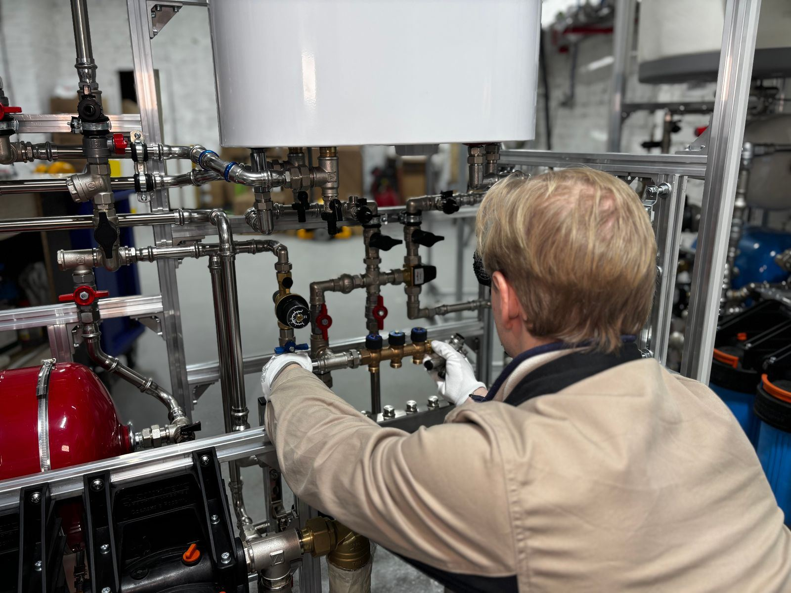

Most water heaters do not simply wear out; they rust out or scale up, and both problems can be held off for years. As water heats, dissolved minerals come out of the water and settle into a layer of sediment on the tank floor. On a gas unit, that layer insulates the water from the burner, so the steel runs hotter and the tank starts to rumble and pop. On an electric unit, it builds up around the lower element until the element burns out. Meanwhile the anode rod, a metal rod designed to corrode so the tank does not, dissolves a little every month. Once it is gone, the tank itself becomes the target. In Elgin, IL, we see this pattern constantly, and most of it was preventable.
The work is hands-on and specific. We drain the tank and flush out sediment until the water runs clean. We pull the anode rod to see how much protection remains and replace it when needed. We lift the T&P valve lever to confirm it opens, then watch it reseat without dripping. For gas equipment, we inspect the burner and flame, pilot or ignition parts, thermocouple or flame sensor, and the vent and draft. For electric equipment, we meter the elements and check the thermostats and wiring. Then we check the expansion tank's pressure, confirm a safe temperature setting near 120 degrees, and look over every fitting for early signs of a leak.
Tankless owners need maintenance too, just a different kind. Scale builds up inside the heat exchanger, especially in hard water, and eventually triggers flow problems, fluctuating temperatures, and error codes. We descale the heat exchanger with a pump and descaling solution through the service valves, clean the inlet filter, check the venting and condensate line on condensing models, and review the unit's error history. At the end of any visit, you get a plain-language report of what we found. Call (847) 220-5078 to schedule water heater maintenance in Elgin before a small issue turns into a leak.
What homeowners call us about most is Water Heater Repair in Elgin and Water Heater Replacement in Elgin. Start there if you're not sure what you need.

Signs You Need Water Heater Maintenance in Elgin
Most tanks announce trouble weeks or months ahead with rumbling noises, rusty water, or hot showers that keep getting shorter. These are the red flags our technicians see most often before a breakdown:
- A rotten-egg smell from the hot water
- Hot water that looks cloudy or rust-colored
- A tank that pops and knocks during a heating cycle
- Temperature swings or reduced flow from a tankless heater
- Rising utility bills that point to lost efficiency
- Small drips at the drain valve or connections
- A water heater that has never been flushed or inspected
- Less hot water available than when the tank was new
Early Action Saves Money
Left alone, even minor symptoms like rumbling or temperatures that swing from hot to warm tend to mean the heater is working its way toward a breakdown. Don't wait. Get Elgin Water Heater on the phone at (847) 220-5078 and we'll get a technician scheduled.
Get Water Heater Maintenance Handled Today
Our experienced technicians are standing by to help.
Call (847) 220-5078 NowCommon Questions We Hear
Why Professional Water Heater Maintenance Matters
The homeowner's side of maintenance is short: keep the area clear, watch for drips, and pay attention to new sounds. The rest carries more risk than it looks. Flushing involves scalding water and an old plastic drain valve that may crack or refuse to seal. Anode rods are often seized in place and need significant force, sometimes with a flexible rod for low-clearance spaces. An older T&P valve may not reseat once tested, which leaves you with a drip and a replacement to arrange. And on gas heaters, the burner and vent affect how combustion gases leave the house, which is not something to guess about.
We arrive with the parts and tools the job usually needs, including drain valves, anode rods and flexible anodes, relief valves, and meters for electrical testing. Tankless descaling gear comes along for those units. Experience counts as much as equipment: an experienced eye can spot a corroding nipple, a sooty burner, or an expansion tank that has lost its charge long before any of them cause trouble. Elgin Water Heater treats maintenance as a way to catch small issues early and keep your heater working for as many years as possible.
Our Water Heater Maintenance Process
Our workflow is simple and thorough, so nothing gets missed between the fuel supply and the relief line. Here's what you can expect when you choose Elgin Water Heater:
Inspection and Safety Test
The visit starts with safety: relief valve testing, a leak check, a look at the burner, pilot, and flue on gas models, and element testing on electric ones.
Sediment Flush
Sediment gets cleared through the drain valve until the water comes out clean, and we check that the valve closes without dripping.
Component Inspection
The anode rod comes out for inspection, and the expansion tank is tested so pressure stays under control.
Settings and Report
After refilling, we confirm the heater is running, adjust the thermostat, and walk you through the condition of each part.
Repair or Replace? Let's Figure It Out.
We give honest advice and upfront pricing on every job, big or small.
Call (847) 220-5078 NowWater Heater Care Tips From Our Technicians
Routine maintenance is almost always cheaper and easier than an early replacement. Follow these tips from our technicians:
- Descale tankless units once a year, or more often in hard water
- Ask about water treatment if flushing turns up heavy mineral buildup
- Replace a heavily consumed anode rod to extend the tank's life
- Check the drain pan and fittings every few months for drips or rust
- Set the water temperature around 120 degrees for safety and efficiency
- Leave open space around the tank, especially near a gas burner
- Schedule a flush every year, or every six months if you have hard water
Doing It Yourself vs. Hiring a Technician
The line between a safe DIY check and a risky repair is usually the moment you need to open a gas fitting, a vent connection, or an electrical cover. Here's a comparison:
| Consideration | DIY Attempt | Professional Service |
|---|---|---|
| Sediment Removal | Scalding water and a drain valve that may not reseal | Full flush with replacement valve on hand |
| Corrosion Protection | Hard to remove without special tools | Pulled, inspected, and replaced when consumed |
| T&P Testing | Older valve may drip after testing | Tested and replaced if it will not reseat |
| Burner and Venting | Thermocouple issues missed | Burner, pilot, and draft checked |
| Tankless Care | Error codes ignored | Descaled with the proper setup |
| System Pressure | Air charge never checked | Water pressure checked |
Get Water Heater Maintenance Help Today
Get your hot water back before a small fault turns into a flooded floor. Elgin Water Heater is ready to respond fast.
Call (847) 220-5078 TodayWater Heater Maintenance Near Elgin
We serve Elgin and its neighboring towns for water heater maintenance, from quick same-day repairs to planned installs.